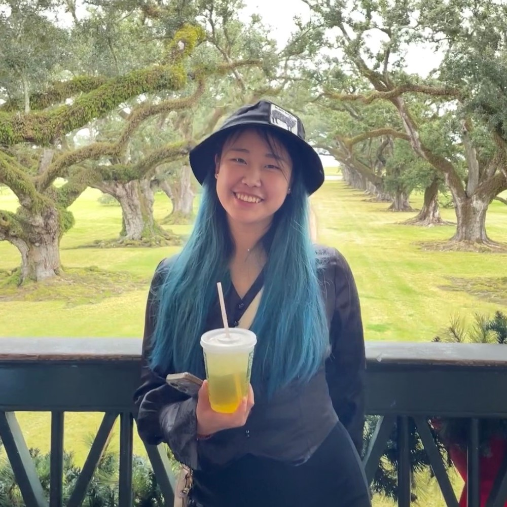

Rao FU
Graphics / Vision / Robotics
I’m a PhD student in Computer Science at Brown University.
My research sits at the intersection of 3D vision, computer graphics, and robotics. I work to enable machines to imagine and interact with the world in human-like ways.
I’m fortunate to work with Prof. Srinath Sridhar and Prof. Daniel Ritchie at Brown IVL & VC Group.
Previously: Intern at Microsoft Research Asia, Autodesk AI Research, Meta GenAI.
B.E. from UCAS.
